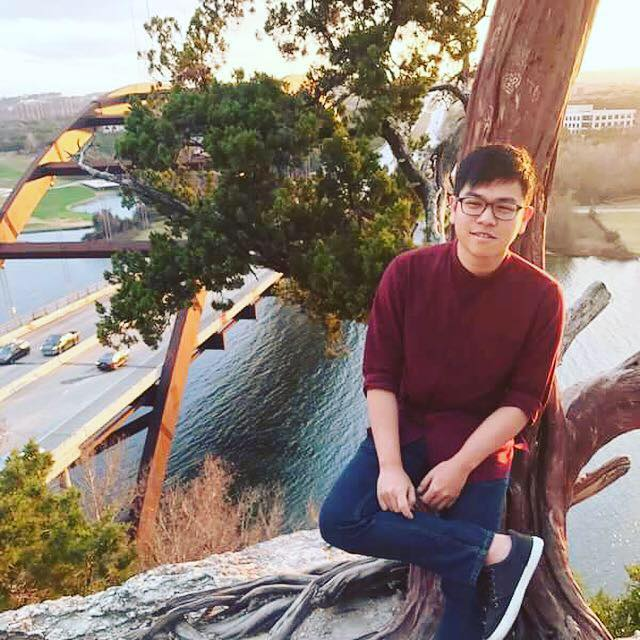

About Me
Hello, my name is Ryan Lee and welcome to my portfolio! My parents came from Hong Kong, China. I'm Cantonese-Chinese, and I love learning languages and instruments. I went to the University of Texas @ Austin and studied Mathematics with a focus on Statistics, and I am currently enrolled in a coding course.
Some hobbies I have are playing video games such as Dota 2, and composing music. I'm also an avid fan of korean pop music. I can speak Cantonese, Korean, and English. I can play the Violin, Guitar, and am currently learning piano through self-teaching.
Connect with Me